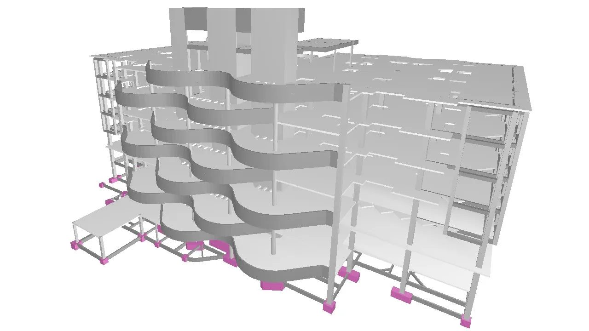

Obras
Projetos e supervisões da Miletus em pontes, contenções, edificações e barragens.

Ampliação de ponte
Ponte do Rio Santa Maria do Doce
86 m de extensão, sem demolição · São Roque do Canaã (ES)
Ver a ficha da obra
Urbanização e obras de arte
Entorno da Barragem São Dalmácio
126,5 m de passarela estaiada · São Roque do Canaã (ES)
Ver a ficha da obra
Avaliação estrutural
Hospital Estadual Jayme dos Santos Neves
31.833 m² avaliados · Serra (ES)
Ver a ficha da obra
Projeto e supervisão
Barragem São Dalmácio
309.902 m³ de reservatório · São Roque do Canaã (ES)
Ver a ficha da obra
Consultoria em obra
Barragem do Rio Piraquê-Açu
Vazão de projeto de 351 para 580 m³/s · Aracruz (ES)
Ver a ficha da obra